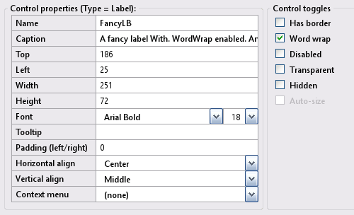
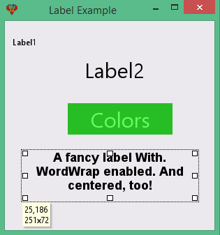

Toolbox Label
Labels in an InForm application are used for displaying information to the user.
Label control
Create a new Label control by clicking the Label icon in the Toolbox. The newly created control will be displayed in the preview window; allowing you to move it around to meet your design requirements. Edit the Label properties as necessary.
2) Label Properties:
Label example: Preview window.
Note: Label properties will reflect the highlighted control selected in the preview window, enabling you to customize it as needed.
Design time:
At design time, labels are automatically resized when you change their captions or fonts.
If you set the WordWrap property to True, you can enter multiple lines by adding a line break with the escape code \n in the Editor.
Runtime:
At runtime, you can use CHR$(10) as a line break character, or even \n if you use the SetCaption method. Here's an example of runtime code:
Control(Label1).Height = 80
Control(Label1).AutoSize = TRUE
Control(Label1).WordWrap = TRUE
SetCaption Label1, "Line example" + Chr$(10) + "Next line.\n Another line!"
SetCaption Label1, "" 'clear labelLabel example
Specification: Specification for the label example:
- Colors-label hover (ColorsLB): Change the background to black and the foreground to white when hovered over; restore the original colors when the mouse exits.
- Change the fancy label (FancyLB) text when hovered, demonstrating the use of CHR$(10) and \n for line breaks.
Implimenation: The following provide solutions for the specifications outlined above:
- For the hover effect, utilize the subroutines __UI_MouseEnter and __UI_MouseLeave.
- To change colors, use Control(ID).ForeColor and Control(ID).BackColor.
- For additional details, refer to LabelExample.bas.
- At the layout stage, save the project using File -> Save Project As and enter the name LabelExample.
Basic file LabelExample.bas
Option _Explicit
': This program uses
': InForm - GUI library for QB64 - v1.5
': Fellippe Heitor, 2016-2024 - fellippe@qb64.org - @fellippeheitor
': https://github.com/FellippeHeitor/InForm
'-----------------------------------------------------------
': User variables
Dim Shared original_ForeColor As _Unsigned Long '<---
Dim Shared original_BackColor As _Unsigned Long '<---
': Controls' IDs: ------------------------------------------------------------------
Dim Shared Label1 As Long
Dim Shared Label2 As Long
Dim Shared ColorsLB As Long
Dim Shared FancyLB As Long
Dim Shared LabelExample As Long
': External modules: ---------------------------------------------------------------
'$INCLUDE:'InForm\InForm.bi'
'$INCLUDE:'InForm\xp.uitheme'
'$INCLUDE:'LabelExample.frm'
': Event procedures: ---------------------------------------------------------------
Sub __UI_BeforeInit
End Sub
Sub __UI_OnLoad
End Sub
Sub __UI_BeforeUpdateDisplay
'This event occurs at approximately 60 frames per second.
'You can change the update frequency by calling SetFrameRate DesiredRate%
End Sub
Sub __UI_BeforeUnload
'If you set __UI_UnloadSignal = False here you can
'cancel the user's request to close.
End Sub
Sub __UI_Click (id As Long)
Select Case id
Case Label1
Case Label2
Case ColorsLB
Case FancyLB
Case LabelExample
End Select
End Sub
Sub __UI_MouseEnter (id As Long)
Select Case id
Case Label1
Case Label2
Case ColorsLB
original_ForeColor = Control(id).ForeColor ' <---
original_BackColor = Control(id).BackColor ' <---
Control(id).ForeColor = _RGB32(255, 255, 255) '<---
Control(id).BackColor = _RGB32(0, 0, 0) ' <---
Case FancyLB
SetCaption FancyLB, "That has removed" + Chr$(10) + " the fancy label! \n Well fancy that!" '<---
Case LabelExample
End Select
End Sub
Sub __UI_MouseLeave (id As Long)
Select Case id
Case Label1
Case Label2
Case ColorsLB
Control(id).ForeColor = original_ForeColor '<---
Control(id).BackColor = original_BackColor '<---
Case FancyLB
Case LabelExample
End Select
End Sub
Sub __UI_FocusIn (id As Long)
Select Case id
End Select
End Sub
Sub __UI_FocusOut (id As Long)
'This event occurs right before a control loses focus.
'To prevent a control from losing focus, set __UI_KeepFocus = True below.
Select Case id
End Select
End Sub
Sub __UI_MouseDown (id As Long)
Select Case id
Case Label1
Case Label2
Case ColorsLB
Case FancyLB
Case LabelExample
End Select
End Sub
Sub __UI_MouseUp (id As Long)
Select Case id
Case Label1
Case Label2
Case ColorsLB
Case FancyLB
Case LabelExample
End Select
End Sub
Sub __UI_KeyPress (id As Long)
'When this event is fired, __UI_KeyHit will contain the code of the key hit.
'You can change it and even cancel it by making it = 0
Select Case id
End Select
End Sub
Sub __UI_TextChanged (id As Long)
Select Case id
End Select
End Sub
Sub __UI_ValueChanged (id As Long)
Select Case id
End Select
End Sub
Sub __UI_FormResized
End Sub
'$INCLUDE:'InForm/InForm.ui'
Form file LabelExample.frm
': This form was generated by
': InForm - GUI library for QB64 - v1.5
': Fellippe Heitor, 2016-2024 - fellippe@qb64.org - @fellippeheitor
': https://github.com/FellippeHeitor/InForm
'-----------------------------------------------------------
SUB __UI_LoadForm
DIM __UI_NewID AS LONG, __UI_RegisterResult AS LONG
__UI_NewID = __UI_NewControl(__UI_Type_Form, "LabelExample", 300, 300, 0, 0, 0)
__UI_RegisterResult = 0
SetCaption __UI_NewID, "Label Example"
Control(__UI_NewID).Font = SetFont("segoeui.ttf", 12)
Control(__UI_NewID).HasBorder = False
__UI_NewID = __UI_NewControl(__UI_Type_Label, "Label1", 150, 23, 11, 19, 0)
__UI_RegisterResult = 0
SetCaption __UI_NewID, "Label1"
Control(__UI_NewID).HasBorder = False
Control(__UI_NewID).VAlign = __UI_Middle
__UI_NewID = __UI_NewControl(__UI_Type_Label, "Label2", 150, 45, 90, 47, 0)
__UI_RegisterResult = 0
SetCaption __UI_NewID, "Label2"
Control(__UI_NewID).Font = SetFont("segoeui.ttf", 30)
Control(__UI_NewID).HasBorder = False
Control(__UI_NewID).VAlign = __UI_Middle
__UI_NewID = __UI_NewControl(__UI_Type_Label, "ColorsLB", 150, 45, 90, 118, 0)
__UI_RegisterResult = 0
SetCaption __UI_NewID, "Colors"
Control(__UI_NewID).Font = SetFont("segoeui.ttf", 30)
Control(__UI_NewID).ForeColor = _RGB32(104, 255, 100)
Control(__UI_NewID).BackColor = _RGB32(39, 189, 36)
Control(__UI_NewID).HasBorder = False
Control(__UI_NewID).Align = __UI_Center
Control(__UI_NewID).VAlign = __UI_Middle
__UI_NewID = __UI_NewControl(__UI_Type_Label, "FancyLB", 251, 72, 25, 186, 0)
__UI_RegisterResult = 0
SetCaption __UI_NewID, "A fancy label With. WordWrap enabled. And centered, too!"
Control(__UI_NewID).Font = SetFont("arialbd.ttf", 18)
Control(__UI_NewID).HasBorder = False
Control(__UI_NewID).Align = __UI_Center
Control(__UI_NewID).VAlign = __UI_Middle
Control(__UI_NewID).WordWrap = True
END SUB
SUB __UI_AssignIDs
LabelExample = __UI_GetID("LabelExample")
Label1 = __UI_GetID("Label1")
Label2 = __UI_GetID("Label2")
ColorsLB = __UI_GetID("ColorsLB")
FancyLB = __UI_GetID("FancyLB")
END SUB
Events
Methods
Properties editable at runtime
- Align
- VAlign
- HasBorder
- Caption
- Top/Left/Width/Height
- Font
- WordWrap
- Tool tip
- Color properties
- Disabled
- BackStyle
- Hidden